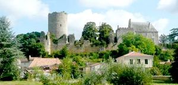
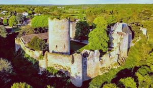
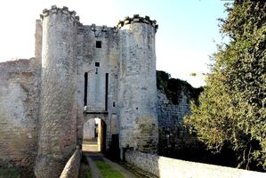
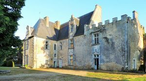
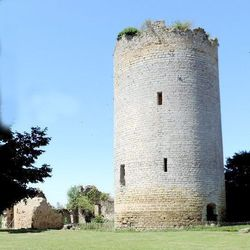

Recensement Jean-Claude Truffet





| Département | 86 — Vienne |
| Canton | Vouneuil sous Biard |
| Commune | Montreui-Bonnin |
| Type d'édifice | Vestiges-Forteresse |
| Période d'origine | XI-XV-XVIII |
MONTREUIL-BONNIN, au XIe siècle possession des comtes de Poitou, passe au XIIe siècle au Plantagenet en 1204 entre dans la mouvance des rois de France. En tout état de cause il existait en 1235 ou 1238, date d'une inscription qui y a été gravée en hébreu par un prisonnier juif, un certain Samuel de Baslou. En 1346 le château est brûlé par le comte de Derby et les ouvriers de l'atelier sont pendus aux créneaux, mais en 1375, Du Guesclin reprend Montreuil-Bonnin aux Anglais. Jean, duc de Berry, achète le château en 1377 et à sa mort en 1416, Montreuil-Bonnin revient à la couronne de France. En 1423 Charles VII donne le château à un capitaine écossais, Laurent Vernon, pour payer la rançon d'un de ses proches. Le château est incendié trois fois par les troupes d'Henri IV pendant les guerres de religion au XVIe siècle. Le comte de Malicorne, royaliste, assiège le château tenu par les rebelles ligueurs en 1593.Le logis élevé au XVe siècle par les Vernon, sera remanié au XVIIe siècle lorsqu'il deviendra la propriété des Saint Simon de Courthomer, après avoir été aux de La Noue. La terre, confisquée au comte d'Artois exilé, sera vendue en 1795 à Claude-Marie Bonnefond qui, afin de récupérer les matériaux démolira les charpentes, les couvertures, les parties supérieures des tours et des courtines, ainsi que le logis médiéval. A la Révolution en 1793, En 1836, le château fut sauvé de la ruine totale par Félix Dupuis-Vaillant qui l'acquit afin d'en assurer sa restauration.
MONTREUIL-BONNIN, cette forteresse adopte la forme d'un quadrilatère irrégulier, au XIIIe siècle reconstruction du Donjon de 33 mètres de haut, l'ensemble à la forme d'un quadrilatère assez régulier, domine la rive gauche de la Boivre et offre sur la face sud un escarpement utilisé comme défense naturelle. Dans l'histoire médiévale, les châteaux-forts avaient une fonction militaire primordiale. Par sa position stratégique la forteresse de Montreuil-Bonnin remplissait la fonction de bouclier pour la ville de Poitiers, l'enceinte de la forteresse est flanquée de cinq tours cylindriques, elle avait aussi un rôle défensif car le château abritait un important atelier monétaire A la Révolution en 1793, vente et démantèlement du château. Du logis médiéval détruit, ne subsistent plus que deux élégantes fenêtres géminées. on accède au château par un châtelet d'entrée cantonné par deux tours semi-circulaires. l'édifice à conservé ses deux étages et sa terrasse ainsi que les rainures dans lesquels venaient se loger les flèches du pont-levis, les bâtiments encore habités aujourd'hui construit au XVe siècle dont le corps principal est éclairé par des baies à meneaux, comporte un rez-de-chaussées et deux étages et un comble orné d'une élégante lucarne, à l'extrémité ouest une terrasse crénelée.
Famille de Saint Simon de Courthomer et Félix Dupuis-Vaillant
"
Vestiges à Montreuil Bonnin